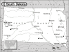

South Dakota

Attention: If you use this or any of the AIRS lists in any state, please report any bad phone numbers or emails to the webmaster. This is the responsibility of all users, including you. Thank you!
Monte Mandler
(m6683@yahoo.com)
CROSSROADS: I-90 & I-29,or I-29 & Hwy 50
Yankton, 57078
PHONE:605-661-4421
VW'S: 70 Westy, 68 bug, 68-70-72 wagon/fastback
AVAILABLE: most of the time
familiar with: 1500, 1600, 1776+, dual carbs
I CAN PROVIDE THE FOLLOWING SERVICES:
INTERNET ACCESS
TOOLS
TELEPHONE ACCESS
TRANSPORTATION HELP
MECHANICAL HELP
SPACE TO WORK ON BUS
PARTS AVAILABLE
COFFEE/TALK
SPARE ROOM
CAMPING SPOT: MOVE IN!!! :)
Favorite beer type: Anything cold
Tim Schaecher
(moreshok@yahoo.com)
CROSSROADS: East Hwy 50
Yankton, 57078
PHONE: 1-605-665-4333
ONLY CALL IF EMERGENCY
VW'S: "56 , '63, '67, '71 bugs, '74, '75 busses, '64 notch
COMMENTS:
i own an Import repair shop and have worked on vw's since 1974. i try and carry a fair
amount of parts for the vw at all times. have done many hi-perf engines and stock resto's.
very familiar with all facets of the almighty vw. also have a good deal of welding
experience.
AVAILABLE: mon-fri 8am to 6pm
familiar with: 25hp, 36hp, Bastard40hp, 1200, 1300, 1500, 1600, 1776+, dual carbs, fuel
injection, type4 engine
INTERNET ACCESS
TOOLS
TELEPHONE ACCESS
TRANSPORTATION HELP
MECHANICAL HELP
SPACE TO WORK ON BUS
STORAGE SPACE
PARTS AVAILABLE
COFFEE/TALK
CAMPING SPOT: 4 nights or more
SPARE ROOM: 4 nights or more
Favorite beer type: Beer is for wimps!
Steve Laughlin
EMAIL: slaughlin_at_rushmore_dot_com
CROSSROADS: I-90, highway 85
Spearfish, 57783
PHONE: 605-642-5595
VW'S: 1971 Westy Sunrise Vortex
I am familiar with: 1600, 1776+
I CAN PROVIDE THE FOLLOWING SERVICES
INTERNET ACCESS
TOOLS
TELEPHONE ACCESS
TRANSPORTATION HELP
MECHANICAL HELP
SPACE TO WORK ON BUS
COFFEE/TALK
CAMPING: 3 nights
SPARE ROOM: none
Favorite beer type: Anything cold
justin henrichsen
EMAIL: oldskhoolbusguy_at_hotmail_dot_com
CROSSROADS: 1-90 sturgis
CITY: nemo
ZIP CODE: 57759
PHONE: 6053911828 6055781828
VW'S: 59 single 60 dd panel 58 bug 65 bug 78 camper
COMMENTS: i have shop space camping space and some parts and will try and
help anyway i can
I am familiar with: 25/36hp, 1200/1300, 1500/1600, 1776+
I CAN PROVIDE THE FOLLOWING SERVICES
INTERNET ACCESS
TOOLS
TELEPHONE ACCESS
TRANSPORTATION HELP
MECHANICAL HELP
SPACE TO WORK ON BUS
STORAGE SPACE
SOME PARTS/CAN GET THEM
COFFEE/TALK
CAMPING: 4 nights or more
SPARE ROOM: CALL ME/IT DEPENDS
Favorite beer type: Room temp will do.
Bradley
EMAIL: bmorgan_at_rapidnet_dot_com
CROSSROADS: Sturgis SD
CITY: Deadwood, 57754 PHONE: 605-431-0206
VW'S: 68 Westfalia, VW powered Trike
COMMENTS: I'm happy and friendly, I have a reasonable toolkit and put my first
VW engine together from boxes, never seeing one before. I use a
wheelchair, but can go anywhere (see my initials at the top of Harney Peak?).
I'm on a fixed income, so I help for free but gas money is appreciated.
AVAILABLE: Always
I am familiar with: 25/36hp, 1500/1600
I CAN PROVIDE THE FOLLOWING SERVICES
INTERNET ACCESS
TOOLS
TELEPHONE ACCESS
TRANSPORTATION HELP
MECHANICAL HELP
COFFEE/TALK
SPARE ROOM: CALL ME/IT DEPENDS
Favorite beer type: Thick and chewy
{kind=link}